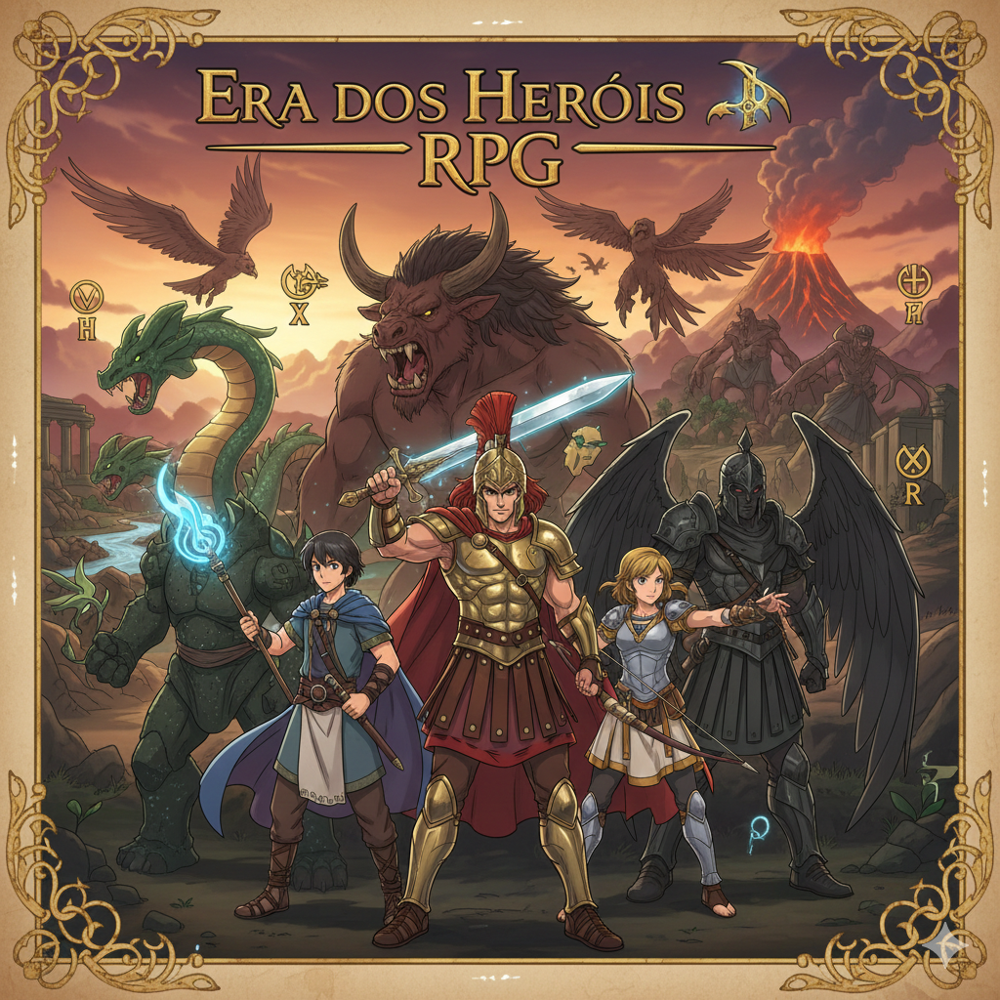

RAÇAS - Introdução

Introdução:
O presente artigo é fruto de uma breve explicação sobre os seres que compõem o universo do “Era dos Herois RPG”, tem como principal objetivo comentar brevemente sobre as criaturas que apareceram nesse universo que se demonstra cada vez mais infinito. Algumas criaturas estão vinculadas de forma exclusiva com os eventos que acontecem nas sagas de Era dos Herois RPG.